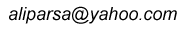

Eighth trip
to Rig-e Jenn
(Nov. 2005)
This was a trip to explore southern Rig-e Jenn. Unlike the northern part, southern Rig-e Jenn has a good vegetation and tracks of wildlife abound. We did some photography of the various plants and also the tracks of animals.
In this trip I was with a group of young desert explores who did the ultimate crossing of Rig-e Jenn last year, on foot! They have their own website.
These pictures were taken by Tooraj Khamenehzadeh and are used by permission.
Dunes of south Rig-e Jenn are low and dense. There are not much salt flats in the south.
Tamarix is the main plant of south Rig-e Jenn.
Another tamarix colony.
A plant waiting to be identified (send name if you know.)
Track of a cat, probably a Sand Cat.

Yours truly with the quintiessential Oshno cigarette.
Our group with the two cars we used.


Copyright © Ali Parsa
1998-2005
All rights reserved